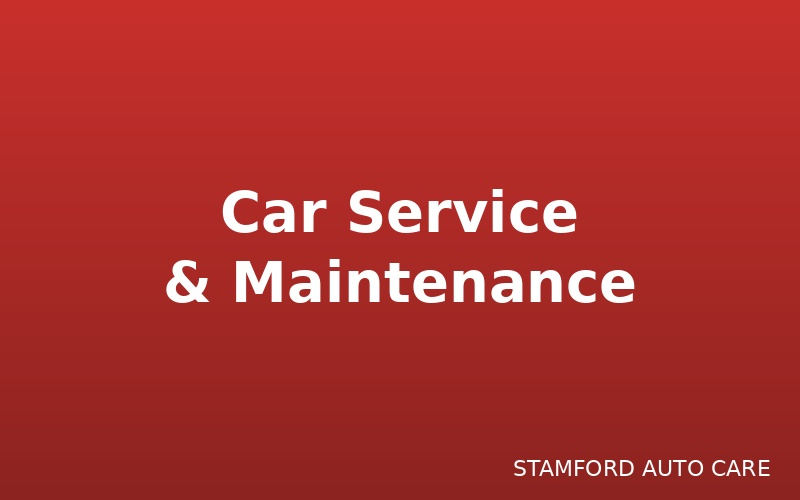

Expert advice and insights on vehicle maintenance

Learn the recommended service intervals for your vehicle based on Kenyan road conditions and climate...
Read More →Don't ignore these critical warning signs that could prevent costly repairs or dangerous breakdowns...
Read More →Discover how professional engine diagnostics can identify problems early and save you thousands of shillings...
Read More →Why regular preventive maintenance is your best investment in vehicle longevity and safety...
Read More →Understanding your legal obligations as a vehicle owner in Kenya...
Read More →Learn how neglecting vehicle maintenance could invalidate your insurance coverage...
Read More →Everything you need to know about roadworthiness inspections and staying compliant with regulations...
Read More →Regular vehicle servicing is crucial for maintaining your car's performance, safety, and longevity. In Kenya, where road conditions vary from smooth highways to rough terrain, following the right service schedule is essential.
Driving Conditions: If you frequently drive on rough roads, in heavy traffic, or in dusty conditions, you may need more frequent servicing.
Climate: Kenya's tropical climate with high temperatures can affect engine oil and fluids, requiring more frequent checks.
Vehicle Age: Older vehicles typically require more frequent maintenance.
Need professional service? Book your appointment with Stamford Auto Care today.
Your vehicle communicates problems through various warning signs. Ignoring these signals can lead to dangerous situations, costly repairs, or complete breakdowns.
1. Dashboard Warning Lights
2. Strange Noises
3. Performance Changes
4. Fluid Leaks
Any fluid leaking under your parked car requires immediate inspection. Different colored fluids indicate different problems:
Don't wait! If you notice any of these signs, contact Stamford Auto Care immediately for professional diagnostics.
Modern vehicles are equipped with sophisticated computer systems that monitor hundreds of components. Professional engine diagnostics can identify problems before they become expensive failures.
Engine diagnostics involves using specialized computer equipment to read error codes and data from your vehicle's onboard computer (ECU). This reveals issues that might not be visible during a basic inspection.
1. Early Problem Detection
Diagnostics can identify minor issues before they escalate into major repairs. For example, a small sensor failure detected early might cost KES 5,000 to fix, but if left unaddressed, could lead to engine damage costing KES 150,000+.
2. Accurate Problem Identification
Instead of guessing and replacing parts unnecessarily, diagnostics pinpoint the exact problem, eliminating trial-and-error repairs that waste money.
3. Prevents Breakdown Costs
Regular diagnostic checks can prevent unexpected breakdowns that result in:
4. Maintains Fuel Efficiency
Diagnostics can identify issues causing poor fuel economy, helping you save on fuel costs over time.
Professional diagnostics at Stamford Auto Care use advanced equipment and 20+ years of experience to accurately identify and resolve issues.
Preventive maintenance is scheduled servicing performed before problems occur. It's your best investment in vehicle longevity, safety, and reliability.
Preventive maintenance includes regular services like oil changes, filter replacements, fluid checks, brake inspections, and tire rotations performed at specified intervals.
1. Extends Vehicle Life
Regular maintenance can extend your vehicle's lifespan by years. A well-maintained car can easily exceed 300,000 km, while a neglected one might fail at 150,000 km.
2. Safety
Regular inspections ensure critical safety systems (brakes, steering, suspension) are functioning properly, protecting you and your passengers.
3. Reliability
Preventive maintenance dramatically reduces the likelihood of unexpected breakdowns, ensuring your vehicle is ready when you need it.
4. Resale Value
A documented maintenance history significantly increases your vehicle's resale value. Buyers pay premium prices for well-maintained vehicles.
5. Cost Savings
While preventive maintenance requires investment, it costs far less than major repairs or premature vehicle replacement.
Start protecting your investment today. Schedule preventive maintenance with Stamford Auto Care.
As a vehicle owner in Kenya, you have legal obligations regarding vehicle maintenance and safety. Understanding these responsibilities helps you avoid penalties and ensures compliance.
1. Roadworthiness
The Traffic Act requires all vehicles to be in roadworthy condition. This means all safety systems must function properly, including brakes, lights, steering, and tires.
2. Annual Inspection
Commercial vehicles and vehicles over a certain age must undergo annual roadworthiness inspections at authorized inspection centers.
3. Insurance Requirements
Valid insurance requires the vehicle to be maintained in proper working condition. Failure to maintain your vehicle could void your insurance coverage.
Maintain detailed service records documenting all maintenance and repairs. This provides evidence of compliance and protects you legally.
Stay compliant and safe. Regular maintenance at Stamford Auto Care ensures your vehicle meets all legal requirements.
Many vehicle owners don't realize that inadequate maintenance can result in denied insurance claims, leaving them financially responsible for accidents and damages.
Most insurance policies contain clauses requiring policyholders to maintain their vehicles in safe, roadworthy condition. This is a fundamental condition of coverage.
1. Accident Claims
If an accident is caused by or contributed to by poor maintenance (e.g., brake failure, tire blowout), your insurance company may:
2. Mechanical Failure Claims
Insurance typically doesn't cover mechanical failures resulting from lack of maintenance. For example:
3. Third-Party Claims
If poor maintenance causes an accident injuring others or damaging property, you could be personally liable if insurance denies coverage.
During claim investigation, insurers may examine:
Protect your insurance coverage. Maintain proper service records with professional care at Stamford Auto Care.
Roadworthiness inspections are mandatory for certain vehicles in Kenya. Understanding the requirements and preparation process ensures smooth compliance.
1. Braking System
2. Steering and Suspension
3. Lights and Signals
4. Tires and Wheels
5. Emissions
6. Body and Structure
If your vehicle passes, you'll receive an inspection certificate valid for one year. If it fails, you must address the identified issues and return for re-inspection.
Ensure your vehicle passes inspection. Get a comprehensive pre-inspection service at Stamford Auto Care.